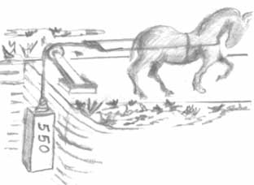
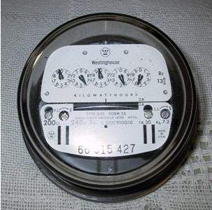

| Language To exchange accurate and understandable ideas about alternators,
we will use terms that are best defined up front. Let's spend
a few minutes acquiring a common understanding of the vernacular of
alternator-speak. When James Watt was perfecting his own incarnation of the steam engine, he realized that there was no convenient way to quantify the performance of each variant of the engine. Obviously, a larger engine could do more work . . . but just how could he best define exactly how well any given design would perform? Further, how could he do it in terms familiar to energy consumers of the day so that they could make accurate comparisons? A major energy consuming task of his time was the transportation of coal out of the mines. Energy sources of choice were the small ponies bred for their ability to work inside tight confines of a mine. Watt's studies of these sturdy little animals deduced that on average, each of these horses could produce a sustained pulling force that would lift 550 pounds of weight a distance of one foot in each second. He settled on the constant of 550 ft-pounds/second as the amount of work that one could accomplish with "1 horsepower." |
 Larger Image |
|  Larger Image | Power vs. Energy: Power is the rate at which energy is transformed. For example, a 100W
lamp consumes power at rate of 100 watts but it takes 10 hours of operation
to consume one killowatt-hour of total energy. Another transformation
to ponder is a portable air bottle charged to 100 psi. The bottle contains
the same amount of energy whether you needed 4 minutes to fill it with
a 1 hp compressor or 2 minutes to fill it with a 2 hp machine. Finally, not
all energy expended to do work can be stored. If one of Watt's ponies
pulled a load over a distance of 10' in ten seconds with a force of
550 pounds, one may accurately assert that 5500 ft pounds of work was done
but at a total loss of energy expended due to heating of friction in the
sliding load. However, if the same pony lifts a 550 pound weight to a height
of 10' with the same expenditure of energy, that energy is now stored on
the weight and can be recovered by allowing the weight to fall while exerting
the same 550' pull over the same distance (excluding of course, losses in
friction of the ropes and pulleys). A wattmeter is a POWER measuring device, the watt-hour meter on the back of your house is an ENERGY measuring device. |
{kind=link}
{kind=link}